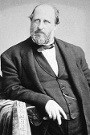

William M. “Patron” Tweed (1823–1878) son derece kirli bir politikacıydı. 19. yy’ın ortalarında New York’un kontrolünü ele geçirmişti. Şehirdeki Demokrat Parti teşkilatının başı olarak yakın çevresine iş imkanları sağlamış ve şehir kaynaklarından onların hesabına milyonlarca dolar değerinde para aktarmıştı. Sanatçı Thomas Nast (1840–1902) politik karikatürleri ile onu hedef almış ve sonuçta gözden düşmesine katkıda bulunmuştur.

Tweed bu karikatürlerin ona politik rakiplerinden, eleştirel gazete yazılarından ve hatta polis soruşturmalarından daha fazla zarar verdiğini söylemiştir: “Bu lanet olası resimleri durdurun. Gazetelerin benim hakkımda ne yazdığı umurumda bile değil. Benim taraftarım okuma yazma bilmezler. Ama lanet olsun ki resimleri görebiliyorlar.”
Tweed 1852 yılında Temsilciler Meclisi’ne seçilen bir New York’luydu. 1854 yılında tekrar seçilemedi. Daha sonra New York Şehri Denetim Kurulu’nda, Eyalet Senatosu’nda ve Bayındırlık Departmanı’nda yer aldı.
En etkili pozisyona ise Tammany Hall’da “büyük şef” olduğunda ulaştı. Burası Demokrat Parti ile ilişkili bir sivil toplum kuruluşuydu. Tammany Hall özellikle İrlandalı göçmenler arasında çok popülerdi. İrlandalı göçmenler Tweed’in politik gücünü aldığı önemli bir seçmen kitlesi haline gelmişti. Seçim kampanyaları düzenleyen Tammany aynı zamanda taraftarlarına çeşitli olanaklar da sağlıyordu. Bu 19’yy’da ABD şehir politikasında yaygın olan bir siyaset tarzıydı.
Tweed 1.82 boyunda ve 136 kilo ağırlığındaydı. Karikatürleştirilmeye çok uygun bir fiziksel görünümü vardı. Almanya doğumlu karikatürist Nast bu durumdan fazlasıyla yararlandı. 1869’dan itibaren Harper’s Weekly’de yayınlanan karikatürlerinde onu halkın vergilerini yiyen bir sahtekar olarak resmetti.
Karikatürler ve Tweed’in gizli işlerini açığa vuran bir makalenin New York Times’ta yayınlanması 1871 yılında şehirden milyonlarca doları çalmakla suçlanmasına neden oldu. Mahkum oldu ve birkaç yıl hapishanede kaldı. Sonra kefaletle serbest bırakıldı ve İspanya’ya kaçtı. 1876 yılında ABD’ye iade edildi. Cezaevinde öldü. Tammany Hall ise 20. yy’ın ortalarına kadar şehir politikasında etkili olmaya devam etti.
Ek Bilgiler
1- Tweed, Massachusetts’teki Sheffield’de kendi taş ocağını işletiyordu. Buradan çıkan taşları Tweed Adliye Sarayı’nın inşasında kullandı. Bu yapı Manhattan’ın güneyinde yer almaktadır.
2- Tammany Hall adını bir Amerikan yerli şefi olan Tamanend’den (1628-1698) alır.
3- Tammany Hall, Manhattan’da farklı adreslerde faaliyet göstermiştir. En sonunda, Doğu 17. Cadde’de günümüzde tiyatro olarak kullanılan bir binaya taşınmıştır.